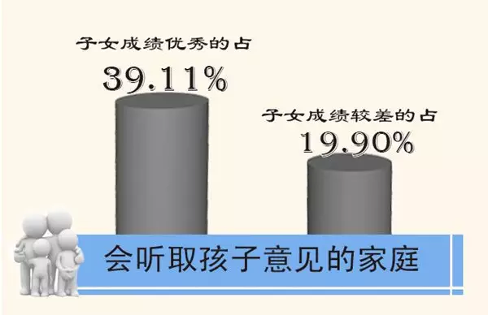
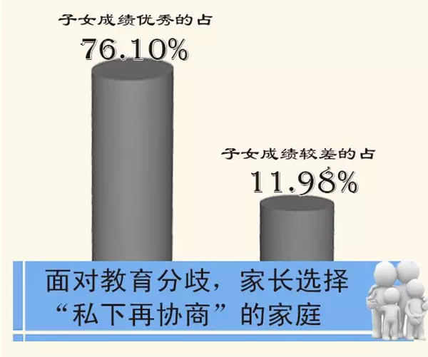
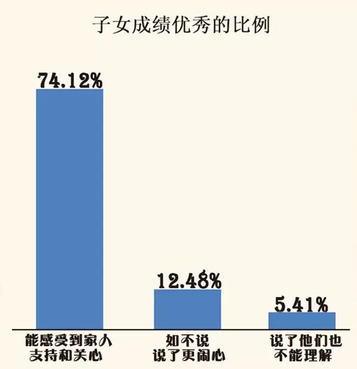
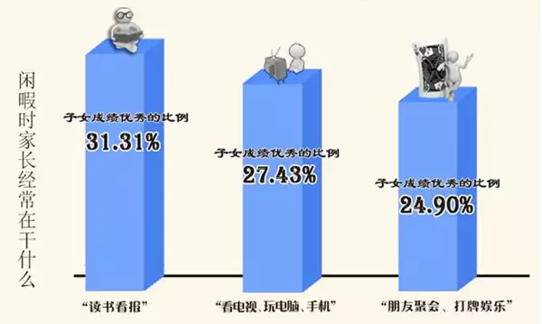
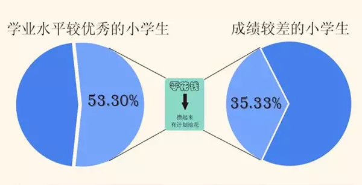
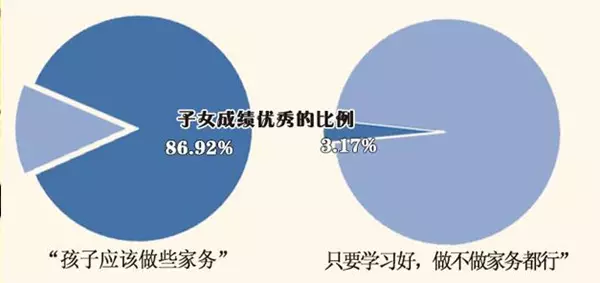

【长大进行时】大数据告诉你：哪些家庭的孩子成绩更优秀？
来源：中国教育报
很多家长，往往以为，学校是决定孩子学习成绩的最为关键的因素。所以千方百计、想方设法、挤破头、砸锅卖铁也要让孩子上个好学校。
不过，很多家长机关算尽，也没有想到，好家庭就是一所好学校。与其大费周折让孩子择个好学校，不如从身边做起，给孩子办个好学校。中国教育科学研究院对四省市小学生家庭教育状态的调查显示，家庭对孩子的隐性学业支持因素更值得关注。那些善于听取孩子意见的家庭，正能量多的家庭，孩子的学习成绩更优秀。各位家长，从你做起，从家庭做起，给孩子在家里就办个“好学校”。
善于听取孩子意见的家庭 孩子成绩更优秀?
成绩优秀的学生家庭更多采用协商、民主的亲子互动模式。数据显示，“会听取孩子意见”的家庭，子女成绩优秀的占39.11%，而子女成绩较差的比例仅为19.90%。
面对教育分歧，父母选择“私下再协商”的家庭，其子女成绩优秀的比例高达76.10%，而成绩较差的学生家庭选择比例仅为11.98%。
在民主、友好的家庭中，学生能充分发挥自主性和能动性，信任感被学生内化为学习潜力和动力，运用于学习的自我管理中，继而促进学业水平的提高。


父母情绪越正向，子女成绩优秀比例越高?
家人间的情绪理解与反馈不容忽视。调查显示，家庭成员间对情绪的理解和反馈越好的家庭，其子女成绩优秀的比例越高。
如当父母情绪不好时，“能感受到家人支持和关心”的家庭，其子女成绩优秀的比例最高，为74.12%，而冷漠、疏离的家庭中，如“不如不说，说了更闹心”和“说了他们也不能理解”，子女成绩优秀的比例仅为12.48%和5.41%。
父母的消极心境会投射并传染子女，尤其对较为敏感的孩子来说，如果父母的情绪不一致，则孩子的心理调适就比较困难。久而久之会给子女造成巨大的心理负担，影响其学习效果。

本次调查还发现，家庭结构对小学生学业水平有显著影响。离异和再婚家庭中孩子成绩优秀的比例大大降低；而在成绩较差的小学生中，单亲和再婚家庭又占了相对较高比例。
父母经常读书看报 孩子成绩更优秀
数据显示，“阅读型”家庭子女成绩优秀的比例更高。闲暇时父母经常“读书看报”的家庭中，其子女成绩优秀的比例为31.31%，高于“看电视、玩电脑、手机”（27.43%）、“朋友聚会、打牌娱乐”（24.90%）等家庭。
调查还发现，学业水平较高的小学生，课外阅读的时间也相对更多。由此看来，为孩子创设良好的“阅读型”家庭氛围对小学生学业成长的意义不言而喻。

家人共进晚餐 孩子成绩普遍更好
小学生学业水平与家庭组织娱乐活动的频率密切相关，家庭组织娱乐活动的频率越高，小学生成绩优秀的比例也越高。数据显示，选择“从不”、“偶尔”和“经常”组织家庭娱乐活动的家庭，成绩优秀的小学生比例分别为17.74%、27.35%和39.19%。
进一步对每周家庭成员共进晚餐的情况进行调查时发现，成绩优秀的学生家庭，“几乎每天”和“每周2-3次”家人共进晚餐的比例均高于成绩较差的学生家庭。
有意思的是，“爸爸经常和孩子做的事”对小学生的学业水平影响明显。在成绩优秀的小学生中，爸爸能经常和孩子“一起玩智力游戏（如下棋，迷宫、数字猜谜等）”的占比最高，为58.23%，其他选项依次为“打闹玩耍”（56.54%），“一起运动”（48.42%），“一起聊天谈心”（41.14%），“一起尝试新事物”（40.83%），“一起修理东西”（22.65%），“讨论军事、科技、政治、历史等话题”（18.86%），“共同保守一个秘密”（13.9%）。
会管理零花钱的孩子 学生学业水平更高

自主管理能力高的小学生学业水平也更高。数据显示，当问及小学生“兴趣班是怎么选的”，能表达自己喜好愿望、独立做出选择的小学生（“我自己选的”）和能与父母商讨听取父母意见的小学生（“父母和我商量的”），成绩优秀的比例相对“同学上，我也上”、“父母决定的”的比例高两倍；?圝圝在成绩优秀的小学生中，随着自主管理零花钱能力的提高，其学业优秀的比例也直线上升。53.30%学业水平较优秀的学生会将零花钱“攒起来，有计划地花”，比成绩较差的小学生高17.97%；相反，随心所欲，给多少花多少的学生中，成绩较差的为13.91%，学业水平较优秀的仅为3.12%。
孩子是否做家务 成绩反差比较大

自理能力强的小学生学习能力也强。当问及“孩子分内的事情总让您帮忙，您会怎么办”时，在成绩优秀的小学生中，“要求孩子自己的事自己做”的比例最高，为43.11%，“有求必应”的比例最低为2.12%。在孩子专门负责一两项家务活的家庭里，孩子成绩优秀的比例也相对较高。?圝圝这样看来，并非把所有的时间都留给孩子学习和休息才是明智的选择。那些认为“只要学习好，做不做家务都行”的家庭中，子女成绩优秀的比例为3.17%，而持有“孩子应该做些家务”观点的家庭中，此比例为86.92%，两者相差悬殊。
如果您需要免费心理咨询的帮助，可在平台内进行预约，或在平台内回覆：@咨询热线，透过电话预约心理咨询。